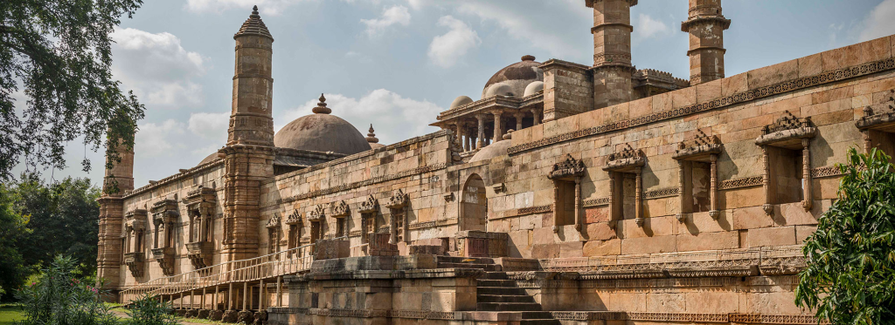

Champaner-Pavagadh Archaeological Park is a UNESCO World Heritage Site that showcases a perfect blend of Hindu and Islamic architecture. This historical site spans from the foothills to the summit of Pavagadh Hill.
The site offers stunning archaeological ruins, ancient temples, and a hilltop fort that provides panoramic views of the surrounding landscape. It's a paradise for history enthusiasts and adventure seekers alike.
- Jama Masjid - one of the finest mosques in Gujarat
- Kalika Mata Temple - atop Pavagadh Hill
- Kevada Masjid and other Islamic monuments
- Ancient fortifications and city walls
- Ropeway ride to the hilltop offering spectacular views
October to March is ideal. Summers can be very hot. The site requires considerable walking, so comfortable weather is important.
Champaner is about 47 km from Vadodara. You can take a bus or hire a taxi from Vadodara, which is well connected by rail and road to major cities. The nearest airport is Vadodara.